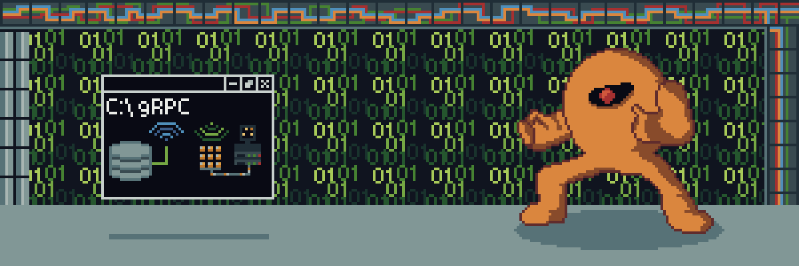
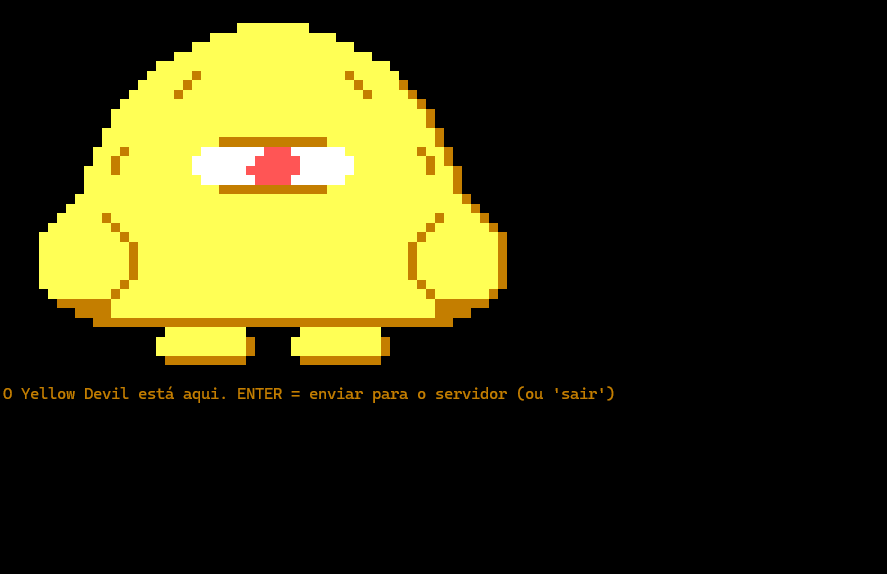
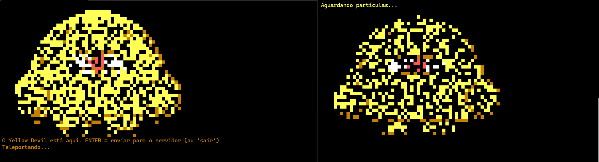
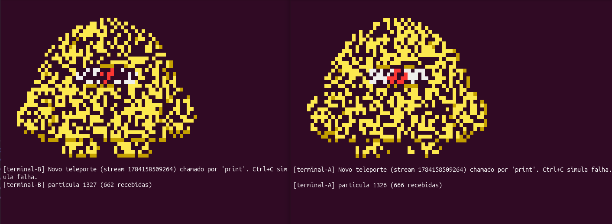
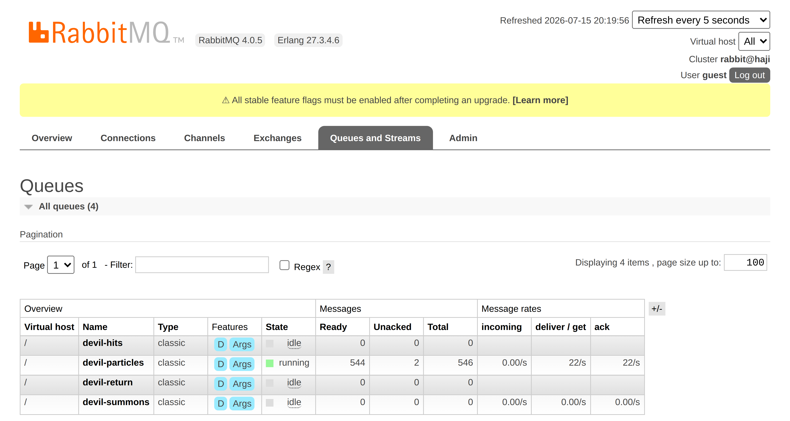

O mesmo boss, dois paradigmas de comunicação distribuída
Ramon Couto Santos & Aaron Goldberg Guerra · Desenvolvimento de Sistemas Distribuídos
O Yellow Devil (Mega Man, 1987) é famoso por uma coisa só: ele se desmonta em partículas, atravessa a tela e se remonta do outro lado. Só dá para acertá-lo nesse trânsito.
Isso já é um sistema distribuído: um estado que sai de um lugar, viaja em pedaços independentes e é reconstruído em outro.
O sprite tem 52 × 36 e 1.328 pixels não-vazios.
1 pixel = 1 mensagem. 1.328 mensagens = 1 boss.
Se as mensagens chegam, o monstro aparece. Se alguma se perde, fica um buraco nele. O desenho é o log.

O boss montado num terminal — 1.328 partículas no lugar
Os dois trabalhos resolvem o mesmo problema com tecnologias diferentes. Trocamos só o meio pelo qual a partícula viaja — e é essa a comparação.
| TRABALHO 1 · gRPC | TRABALHO 2 · MOM | |
|---|---|---|
| A partícula vira | uma mensagem de um stream RPC | uma mensagem numa fila disputada |
| Tecnologia | Protocol Buffers + HTTP/2 | RabbitMQ (AMQP + STOMP) |
| Quem conhece quem | cliente sabe o endereço do servidor | ninguém sabe de ninguém — só o nome da fila |
| Se o outro lado cai | o stream quebra — a chamada falha | a mensagem volta pra fila e é reentregue a outro |
| O que vamos provar | o boss se remonta no outro processo, partícula a partícula, pelo stream | 666 + 662 = 1.328 — cada mensagem foi para um só consumidor |
| Comando | devil grpc | devil mom |
PARTE 1
Chamar um método que está na outra máquina como se fosse local — com contrato tipado e streaming
Eu chamo client.Teleport(...).
Parece um método local.
Executa em outro processo, em outra máquina.
Serialização, rede e protocolo ficam escondidos. É esse "esconder" que dá nome à sigla.
// A mensagem COMPOSTA: 4 atributos. A posição viaja JUNTO com o pixel. message DevilPart { int32 part_id = 1; // a ordem do pedaço bytes pixel_data = 2; // a cor daquele pixel int32 target_x = 3; // onde ele se encaixa... int32 target_y = 4; // ...do outro lado } // O serviço: UM serviço, DUAS operações remotas. service YellowDevilTransfer { // IDA: as partes fluem do cliente para o servidor rpc Teleport (stream DevilPart) returns (ReassemblyStatus); // VOLTA: o cliente pede e as partes fluem de volta rpc TeleportBack (ReturnRequest) returns (stream DevilPart); }
stream: ele aparece na entrada da primeira operação e na
saída da segunda. Esse detalhe é o que faz o boss se desmontar e se remontar animado.
repeated com tudo dentro = o boss aparece de uma vez, sem animação.
O stream resolve os dois: uma conexão, e o servidor desenha cada partícula à medida que chega.bytes e não string?
Para não amarrar o contrato a um formato de cor. Hoje é uma letra da paleta;
poderia virar RGB sem quebrar o .proto.is_complete + message.
O cliente sabe que o monstro chegou inteiro.
À esquerda o cliente se desintegrando (“Teleportando…”) · à direita o servidor remontando (“Aguardando partículas…”) — dois processos, um stream
lock.
Se dois clientes pedirem ao mesmo tempo, só o primeiro leva — o outro recebe um stream vazio.
Ninguém escreve nada disso à mão. O pacote Grpc.Tools roda o protoc
durante o dotnet build e gera, a partir do .proto:
| Arquivo gerado | O que tem dentro |
|---|---|
| YellowDevilServer/obj/…/Protos/YellowDevil.cs | as classes das mensagens (DevilPart, ReassemblyStatus…) + serialização |
| YellowDevilServer/obj/…/Protos/YellowDevilGrpc.cs | YellowDevilTransferBase — a classe que o servidor herda |
| YellowDevilClient/obj/…/YellowDevil.cs | as mesmas classes de mensagem, do lado do cliente |
| YellowDevilClient/obj/…/YellowDevilGrpc.cs | YellowDevilTransferClient — o stub que o cliente chama |
GrpcServices no .csproj:
Server num, Client no outro — a partir do mesmo .proto.
Fonte única = os dois lados nunca discordam.
Não é o nosso caso: aqui é fluxo contínuo entre dois processos que nós controlamos.
# Um comando abre as 3 abas: $ ./devil.sh grpc # Linux > .\devil.ps1 grpc # Windows # O que ele faz por baixo: $ dotnet build # restaura + GERA OS STUBS + compila $ dotnet run --project YellowDevilServer $ dotnet run --project YellowDevilClient -- \ http://localhost:5254 boss # nasce COM o monstro $ dotnet run --project YellowDevilClient -- \ http://localhost:5254 # nasce vazio
Controles: ENTER com o monstro = teleporta pro servidor ·
ENTER sem o monstro = invoca de volta
O cliente recebe o endereço do servidor como argumento — é só isso que ele precisa saber.
# outro PC, mesma rede: dotnet run --project YellowDevilClient -- \ http://192.168.0.10:5254 boss
5254 — clientes gRPC (HTTP/2)
5255 — modo sala: qualquer um abre
http://IP:5255 no navegador, sem instalar nada
No Windows, liberar antes:
netsh advfirewall firewall add rule … localport=5254,5255
PARTE 2
Middleware Orientado a Mensagens: ninguém chama ninguém — todo mundo fala com uma fila no meio
O cliente precisa saber onde o servidor está: http://192.168.0.10:5254.
Os dois têm que estar online ao mesmo tempo. Se o servidor cai, a chamada falha.
Produtor e consumidor só conhecem o nome da fila.
Não sabem o endereço um do outro. Nem precisam estar online juntos.
O broker (RabbitMQ) desacopla em três eixos:
Escolhemos a Opção A — Fila de Mensagens (ponto-a-ponto / work queue)
Cada partícula tem que ser desenhada por UM consumidor só. A fila reparte as 1.328 entre quem estiver ativo.
Se dois desenhassem o mesmo pixel, o boss sairia duplicado em vez de repartido.
Cada assinante receberia uma cópia de TODAS as partículas — o boss inteiro em cada um, em vez de dividido.
Trocaríamos a fila por uma exchange fanout, e cada assinante teria a sua própria fila.
devil-hits (cada tiro) e devil-return (devolver o boss).
O navegador publica nelas — ele é produtor E consumidor ao mesmo tempo.

666 + 662 = 1.328
o total exato do sprite
Os dois terminais estão no mesmo teleporte e cada um desenhou só a metade que pegou — por isso o boss aparece chuviscado nos dois. Nenhuma partícula foi processada duas vezes, nenhuma se perdeu.

As 4 filas, todas com o selo D = duráveis.
devil-particles em running, entregando a 22/s.
Unacked = 2 — a prova do prefetch=1:
cada um dos 2 consumidores segura uma única mensagem por vez.
Ctrl+C num consumidor no meio do teleporte
as mensagens que ele não confirmou voltam para a fila e são reentregues ao outro:
aparece << REENTREGUE apos falha!. Nada se perde.ESPAÇO atira no boss
o tiro vai para devil-hits e o HP autoritativo cai no console do
orquestrador: o navegador publica e consome pelo mesmo broker# 1) o broker — UMA VEZ SÓ na vida da máquina $ ./devil.sh broker # apt + plugins (Linux) > .\devil.ps1 broker # winget (Windows, como ADMIN) # 2) a demo — abre as 4 abas + o navegador $ ./devil.sh mom # 3) invocar sem o navegador (plano B) $ ./devil.sh invocar $ ./devil.sh status # o que está de pé $ ./devil.sh stop # derruba as demos
Sem Docker: o RabbitMQ roda nativo, como serviço do sistema — sobe junto com a máquina.
| Porta | Quem usa |
|---|---|
| 5672 | back-end C# → broker (AMQP) |
| 15674 | front JS → broker (STOMP/WS) |
| 15672 | Management UI — guest/guest |
| 8080 | a página do front (http.server) |
Ninguém configura endereço de ninguém. Cada componente aponta para o broker e diz o nome da fila. Só.
| gRPC | MOM (fila) | |
|---|---|---|
| Acoplamento | cliente conhece o endereço do servidor | só o nome da fila |
| Tempo | síncrono — os dois online juntos | assíncrono — a fila durável guarda |
| Entrega | 1 cliente ↔ 1 servidor | N disputam; cada msg para um |
| Contrato | .proto tipado, stub gerado |
JSON por convenção |
| Se o outro cai | o stream quebra | a msg volta pra fila e é reentregue |
| Serve para | chamada remota tipada e rápida | repartir trabalho e desacoplar |
Obrigado! — perguntas?